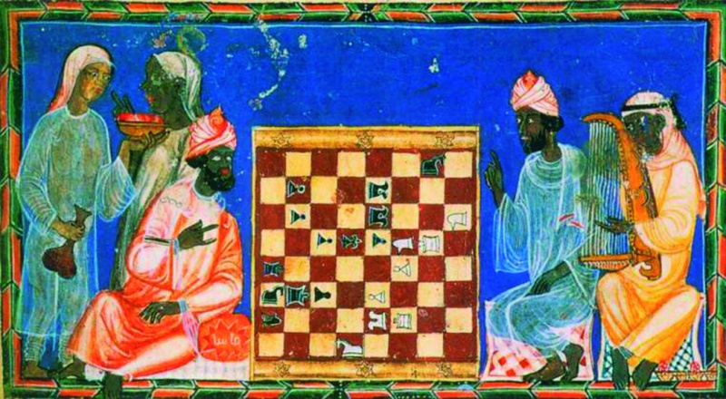

História do Xadrez
O surgimento do xadrez se deu no século VI, na Índia, com o nome de shaturanga, que significa “os quatro elementos de um exército”, em
sânscrito.Posteriormente, o jogo foi para a China e para a Pérsia. É da palavra persa shah, que significa rei, que provêm o nome xadrez.

A forma atual do jogo surgiu no Sudoeste da Europa, na segunda metade do século XV, depois de ter evoluído de suas antigas origens persas
e indianas.
O xadrez é um dos jogos mais populares do mundo, sendo praticado por milhões de pessoas em torneios, clubes, escolas. As competições oficiais
tiveram início no século XIX, Existe ainda a Olimpíada de Xadrez, o campeonato internacional por equipes realizado a cada dois anos.
Desde o início do século XX, a Federação Internacional de Xadrez e a Federação Internacional de Xadrez Postal, organizam eventos que
reúnem os melhores enxadristas do mundo. O enxadrismo foi reconhecido como esporte pelo Comitê Olímpico Internacional em 2001.